Coalition Members
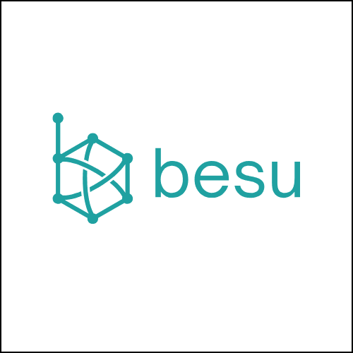
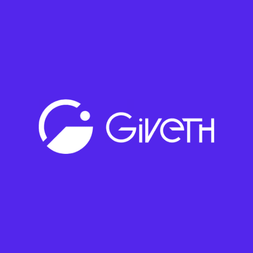
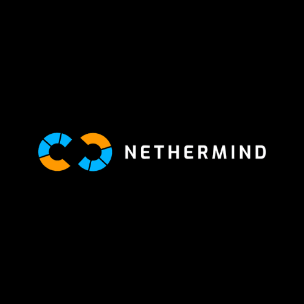
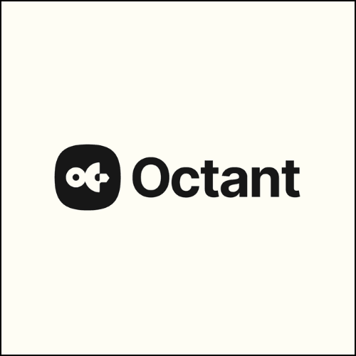
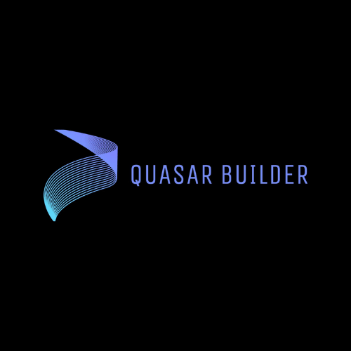
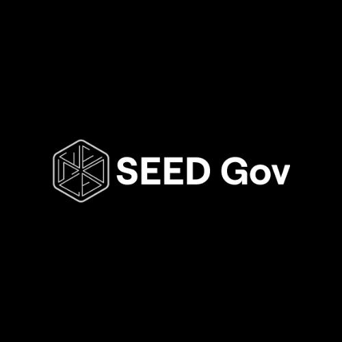
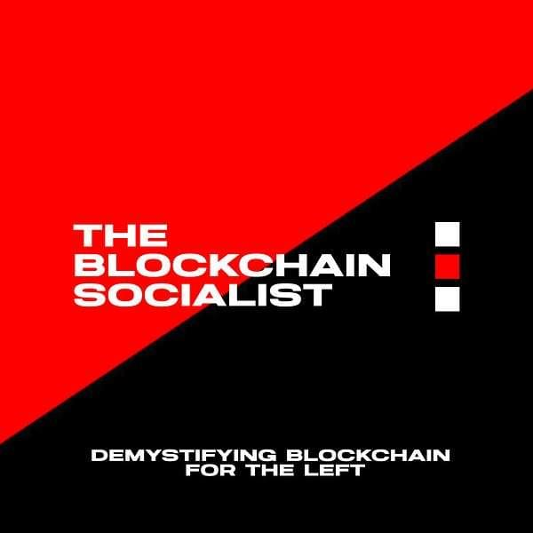
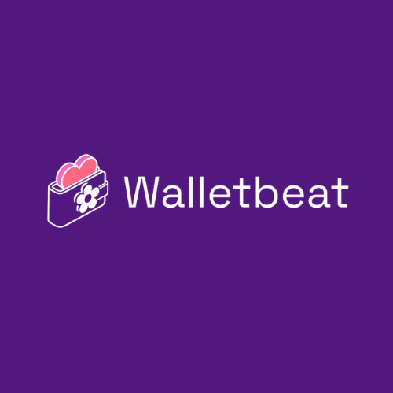
Your org here → Join us
Contributors & Supporters
Ana Marija — Giveth
Anders Elowsson — Ethereum Foundation
Andrew Ashikhmin — Erigon
Anthony Caravello — Shutter Network
Andrei Lapets — Nillion
Auryn Macmillan — Gnosis Guild & The Interfold
Ben Broad — EVMavericks
Benjamin Hunter — BTCS
Brian Adams — Eureka
Bryant Soorkia — Gnosis Guild & The Interfold
Cotabe Moral — Giveth & TheDAO
Crypto Goblin — Weaving Web3
eccogrinder — Gnosis Guild & The Interfold
Gleb Krivosheev — Web3 Journalist
Gottfried Herold — Ethereum Foundation
Greystroke
Griff Green — Giveth & TheDAO
Heiko Franssen — brainbot
Ivey — SEEDGov
Jannik Luhn — Shutter Network
jensei — Web3Privacy
Joe — EthDaily
Josh Dávila — The Blockchain Socialist
JT Nichols — EVMavericks
Julian Ma — Eth Labs
Justin Florentine — Besu
Konrad — Shutter Network
Ke, Bryan, Zheng — ShipAI.ca
Loring Harkness — Shutter Network
Luis Bezzenberger — Shutter Network
Marc Harvey-Hill — Nethermind
Marc Holt — Erigon
Marc Vlad — DeFiScan
Mashal Waqar — Octant
Mercy Boma
Miguel de Vega — Nillion
Milen Filatov — Erigon
Murat Akdeniz — Primev
Mykola Siusko — Web3Privacy
namic
Peyman Momeni — Fairblock
polymutex — Walletbeat
Pooja Ranjan — ECH Institute & EtherWorld
Punit Jain — Shutter Network
Sham — Nillion
Tino — SEEDGov
Ulrich Petri — Shutter Network
Yousra Lembachar — Shutter Network
Zeugh — Anticapture

@ShutterNetwork
Voices from the mempool [01]
@LoringHarkness - why now is the perfect time to start thinking about encrypted mempools on Ethereum mainnet

@ShutterNetwork
Voices from the mempool [03]
@marchhill1 from @Nethermind - why FOCIL and encrypted mempools would be a powerful combination for censorship resistance 💪
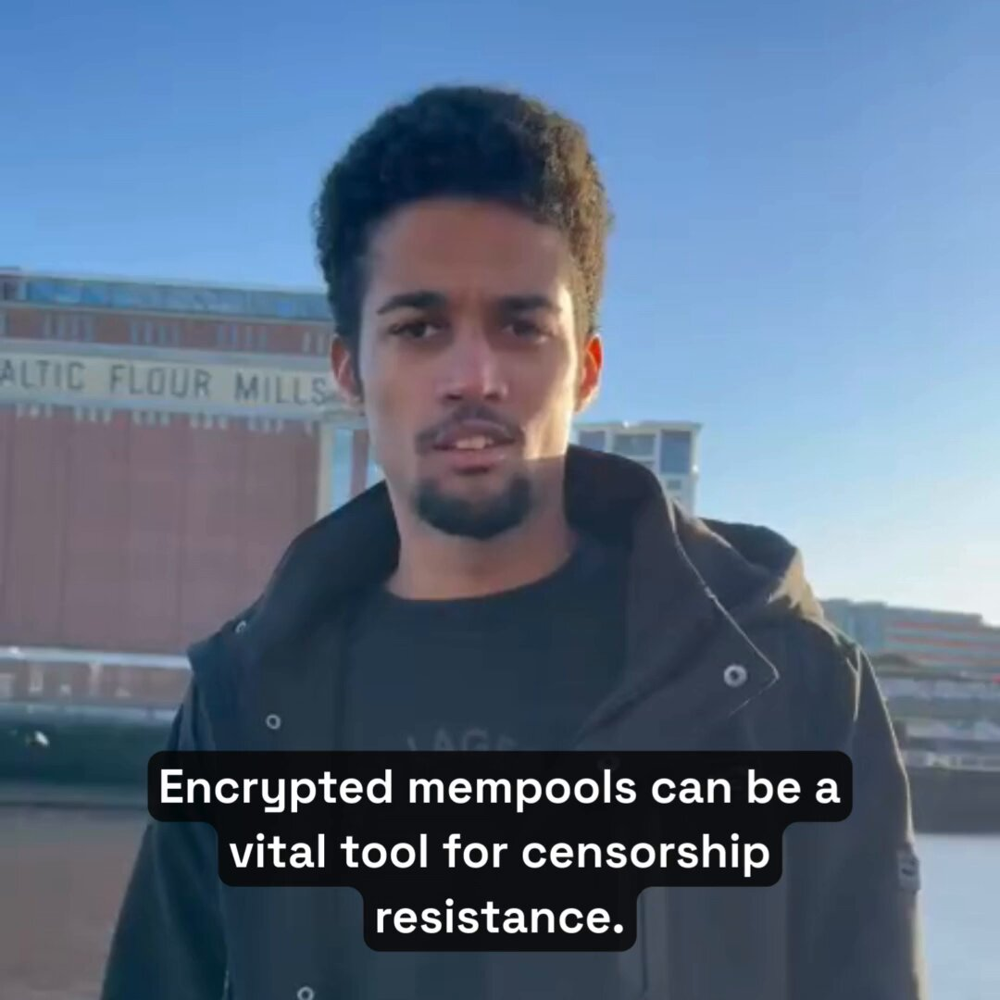

@ShutterNetwork
Voices from the mempool [05]
@MuratLite founder of @primev_xyz - shares how the Primev x Shutter partnership is creating a new way of getting onchain, which is entirely private 🔒

@ShutterNetwork
Voices from the mempool [08]
@Crypto_Goblinz - calls for security and order in the Ethereum galaxy by encrypting the mempool
Let's do it for the normies and everybody else
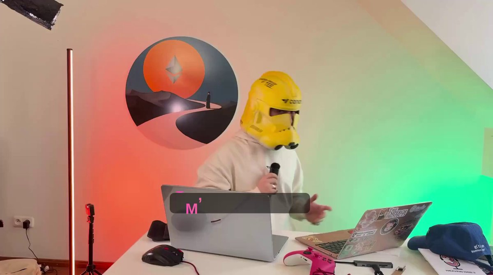
@ShutterNetwork
Voices from the Mempool [11]
@griffgreen knows that crypto is an adversarial environment and that encrypted mempools make crypto more usable for normal people
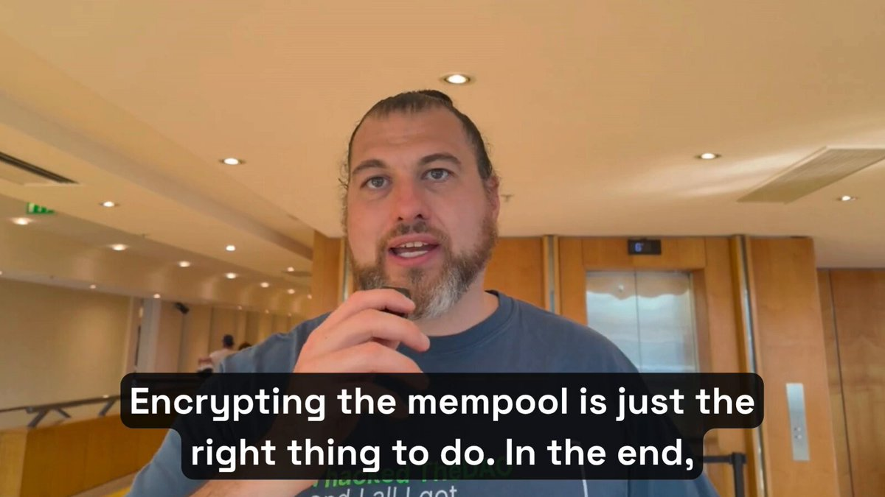

@ShutterNetwork
Voices from the Mempool [13]
@Cotabe_M is bullish on encrypted mempools 🔥
They are the key to stopping the sandwich attacks plaguing Ethereum and finally restoring fairness for users
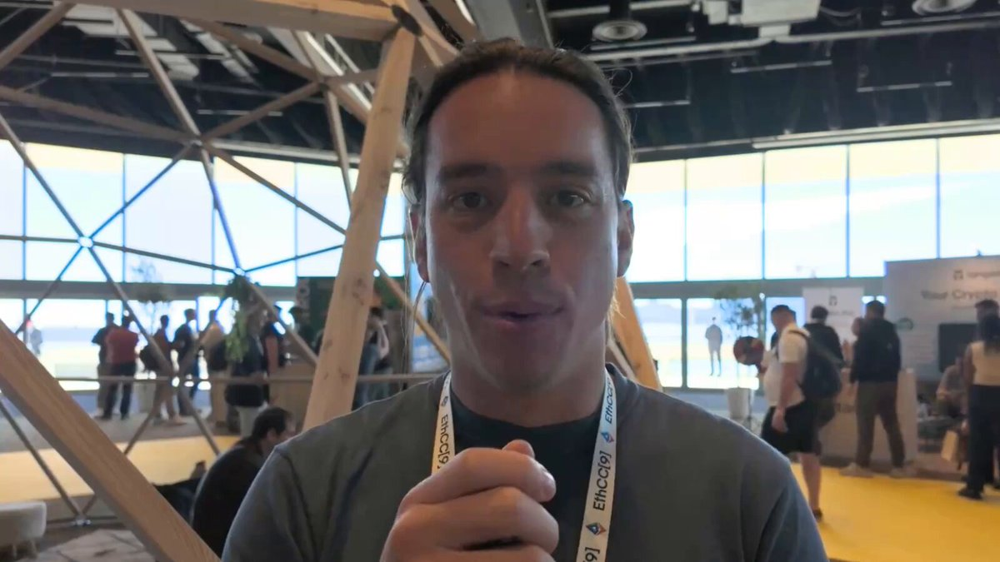

@ShutterNetwork
Voices from the Mempool [14]
Encrypt the Mempool! Coalition member @Cryp_tino (@SEEDGov) explains the visibility problem on Ethereum's unencrypted public mempool and shares difference between good and bad MEV
@acaravello
What did we learn the past 2 months about toxic MEV?
1. you can still be attacked using MEV protection
2. your transactions could still be leaked
3. other chains are racing to encrypt their mempools
It's time we end toxic MEV on Ethereum
Encrypt the mempool!
@_julianma
Ethereum needs an Encrypted Mempool and it needs it fast.
It's not just about stopping sandwiching. Encrypted mempools are how Ethereum matures its onchain markets.
I just published a post on why Ethereum needs encrypted mempools. Here are the core arguments:
@_julianma · Article
Why Ethereum Needs an Encrypted Mempool — and the core arguments for it
@polymutex
Speaking about encrypted mempools now.
x.com/i/spaces/1qJDzzALYRDKV
X Space · Live Audio
Encrypted Mempools — Discussion Space on X
@ShutterNetwork
Voices from the mempool [01]
@LoringHarkness - why now is the perfect time to start thinking about encrypted mempools on Ethereum mainnet
@ShutterNetwork
Voices from the mempool [03]
@marchhill1 from @Nethermind - why FOCIL and encrypted mempools would be a powerful combination for censorship resistance 💪
@ShutterNetwork
Voices from the mempool [05]
@MuratLite founder of @primev_xyz - shares how the Primev x Shutter partnership is creating a new way of getting onchain, which is entirely private 🔒
@ShutterNetwork
Voices from the mempool [08]
@Crypto_Goblinz - calls for security and order in the Ethereum galaxy by encrypting the mempool
Let's do it for the normies and everybody else
@ShutterNetwork
Voices from the Mempool [11]
@griffgreen knows that crypto is an adversarial environment and that encrypted mempools make crypto more usable for normal people
@ShutterNetwork
Voices from the Mempool [13]
@Cotabe_M is bullish on encrypted mempools 🔥
They are the key to stopping the sandwich attacks plaguing Ethereum and finally restoring fairness for users
@ShutterNetwork
Voices from the Mempool [14]
Encrypt the Mempool! Coalition member @Cryp_tino (@SEEDGov) explains the visibility problem on Ethereum's unencrypted public mempool and shares difference between good and bad MEV
@acaravello
What did we learn the past 2 months about toxic MEV?
1. you can still be attacked using MEV protection
2. your transactions could still be leaked
3. other chains are racing to encrypt their mempools
It's time we end toxic MEV on Ethereum
Encrypt the mempool!
@_julianma
Ethereum needs an Encrypted Mempool and it needs it fast.
It's not just about stopping sandwiching. Encrypted mempools are how Ethereum matures its onchain markets.
I just published a post on why Ethereum needs encrypted mempools. Here are the core arguments:
@_julianma · Article
Why Ethereum Needs an Encrypted Mempool — and the core arguments for it
@polymutex
Speaking about encrypted mempools now.
x.com/i/spaces/1qJDzzALYRDKV
X Space · Live Audio
Encrypted Mempools — Discussion Space on X

@ShutterNetwork
Voices from the mempool [02]
@BryanzkEth from @EigenPhi - why encrypted mempools are the real fix to stopping front runners and sandwich attackers

@ShutterNetwork
Voices from the mempool [04]
@bezzenberger - some people think builders oppose encrypted mempools because it reduces their MEV income 👉 that's actually false
Here's what builders really think

@ShutterNetwork
Voices from the mempool [07]
@TBSocialist - shares why he's supportive of an encrypted mempool on Ethereum and what it could bring to the ecosystem

@ShutterNetwork
Voices from the Mempool [09]
@robocopsgonemad shares what often gets missed in discussions - adding an encrypted mempool to Ethereum is an opportunity for a real paradigm shift
It enables something the digital world has never achieved before: fair markets without intermediaries

@ShutterNetwork
Voices from the Mempool [12]
@auryn_macmillan - encrypted mempools are a critical missing component of a complete economic system on Ethereum
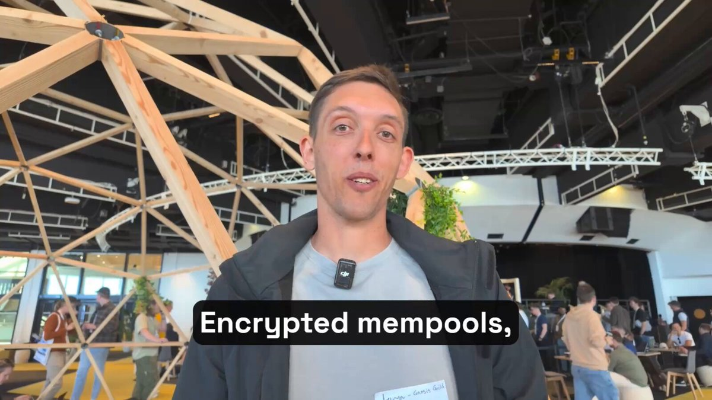
@ethdaily
We're proud to join the new Encrypt the Mempool Coalition!
Alongside industry leaders, we're pushing to integrate an EIP to encrypt the mempool in Ethereum's I* Hardfork - to stop toxic MEV & real-time censorship in a decentralized & credibly neutral way.
Join the coalition 👇
@weboftrees
The full LUCID encrypted mempool EIP-8184 is now up! LUCID is a public encrypted mempool for commit-before-reveal inclusion of MEV-sensitive transactions, without enshrining a specific encryption scheme. With coauthors @_julianma and @robocopsgonemad
ethereum-magicians.org/t/eip-8184-lucid-encrypted-mempool/28017
ethereum-magicians.org
EIP-8184: LUCID — Universal Encrypted Mempool for commit-before-reveal inclusion of MEV-sensitive transactions
@ProDJKC
Encrypt the Mempool. encryptedmempool.org
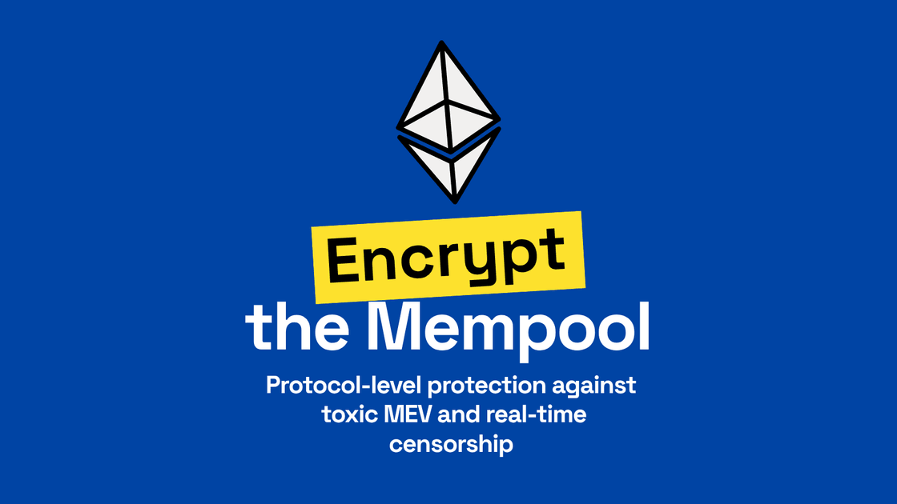
encryptedmempool.org
Encrypt the Mempool! Join the coalition to protect Ethereum users.
@Pememoni
EIP-8105 is a necessary step for Ethereum to meaningfully address pre-execution info leakage. It enables censorship resistance and plausible deniability for block proposers by protecting tx contents, while also mitigating exploitative strategies.
ethresear.ch/t/universal-enshrined-encrypted-mempool-eip/23685
ethresear.ch
Universal Enshrined Encrypted Mempool EIP — Ethereum Research
@ShutterNetwork
Voices from the mempool [02]
@BryanzkEth from @EigenPhi - why encrypted mempools are the real fix to stopping front runners and sandwich attackers
@ShutterNetwork
Voices from the mempool [04]
@bezzenberger - some people think builders oppose encrypted mempools because it reduces their MEV income 👉 that's actually false
Here's what builders really think
@ShutterNetwork
Voices from the mempool [07]
@TBSocialist - shares why he's supportive of an encrypted mempool on Ethereum and what it could bring to the ecosystem
@ShutterNetwork
Voices from the Mempool [09]
@robocopsgonemad shares what often gets missed in discussions - adding an encrypted mempool to Ethereum is an opportunity for a real paradigm shift
It enables something the digital world has never achieved before: fair markets without intermediaries
@ShutterNetwork
Voices from the Mempool [12]
@auryn_macmillan - encrypted mempools are a critical missing component of a complete economic system on Ethereum
@ethdaily
We're proud to join the new Encrypt the Mempool Coalition!
Alongside industry leaders, we're pushing to integrate an EIP to encrypt the mempool in Ethereum's I* Hardfork - to stop toxic MEV & real-time censorship in a decentralized & credibly neutral way.
Join the coalition 👇
@weboftrees
The full LUCID encrypted mempool EIP-8184 is now up! LUCID is a public encrypted mempool for commit-before-reveal inclusion of MEV-sensitive transactions, without enshrining a specific encryption scheme. With coauthors @_julianma and @robocopsgonemad
ethereum-magicians.org/t/eip-8184-lucid-encrypted-mempool/28017
ethereum-magicians.org
EIP-8184: LUCID — Universal Encrypted Mempool for commit-before-reveal inclusion of MEV-sensitive transactions
@ProDJKC
Encrypt the Mempool. encryptedmempool.org
encryptedmempool.org
Encrypt the Mempool! Join the coalition to protect Ethereum users.
@Pememoni
EIP-8105 is a necessary step for Ethereum to meaningfully address pre-execution info leakage. It enables censorship resistance and plausible deniability for block proposers by protecting tx contents, while also mitigating exploitative strategies.
ethresear.ch/t/universal-enshrined-encrypted-mempool-eip/23685
ethresear.ch
Universal Enshrined Encrypted Mempool EIP — Ethereum Research